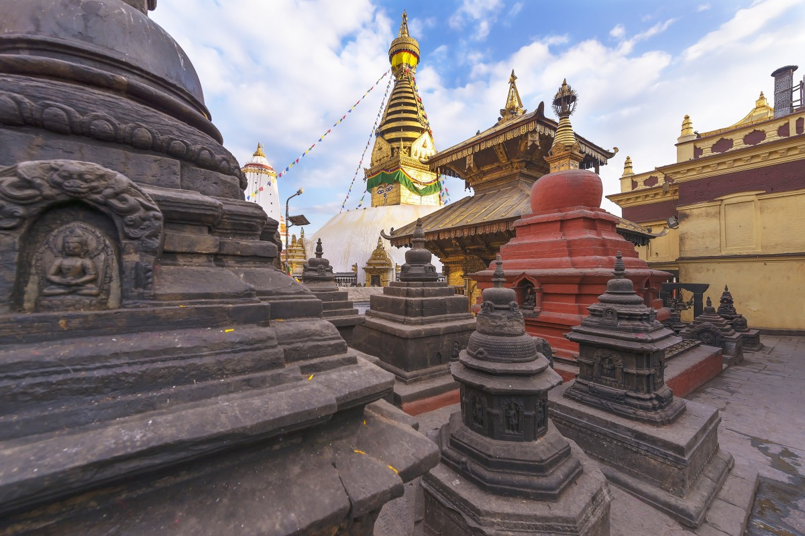

Nuestra ciudad



Nuestra historia
Wachin City fue fundada por Wa Ching, príncipe Yi del clan chino "Aisin Gioro", el 5 de octubre de 1845. Wang Ching es el fundador de la ciudad de 高贵的瓦青城及其后裔 (La noble ciudad de Wang Ching y su descendencia), actualmente conocida como Wachin City. En sus inicios en la Antigua China, era conocido como Aisin Gioro Zhenyu, príncipe y posterior líder del clan Aisin Gioro. Nacido un 12 de mayo de 1818, hijo de Aisin Gioro Hongyuan (padre) y Aisin Gioro Lianhua (madre), lideres del clan Aisin Gioro. Dese muy joven Zhenyu participaría en las actividades del clan ya sea rendir culto a sus antepasados y cuando tuvo la edad suficiente participar en actividades económicas, administrativas y militares de su clan. En el año 1842 asumiría como líder de su clan tras la muerte de su padre en un conflicto con el Clan Rival Shangguan en una disputa por el control de los territorios fronterizos de la Antigua China. Tras asumir el liderazgo de su clan, Zhenyu le declararía la guerra al líder del clan Shangguan Ruihan iniciando una guerra entre los clanes por la expansión territorial. Sin embargo, tras años de guerra, el clan Aisin Gioro comenzaría a verse superado por su clan rival, quien habría formado alianzas con otros clanes. Al cada vez ver el panorama mas desventajoso para su posición y temiendo su posible derrocamiento, Zhenyu tomaría a varios miembros de su familia y gente de confianza y emprendería un viaje de escape hacia Norte América el 28 de Julio de 1845, sin embargo, las tormentas junto a la fuerte marea los arrastrarían hacia Argentina, más específicamente a la Provincia de La Pampa. Allí se instalaría, cambiando su nombre a Wang Ching, para ocultar su identidad de sus enemigos, posteriormente fundando el pueblo de 高贵的瓦青城及其后裔 (La noble ciudad de Wang Ching y su descendencia). Donde viviría hasta su posterior fallecimiento en 1889 a la edad de 71 años. Ching decidió buscar tierras vírgenes en el oeste, por lo que él y las familias que lo acompañaron emprendieron viaje, eventualmente llegando a La Pampa.
Nuestra identidad
Nuestra identidad se basa en la preservación de las tradiciones y valores del clan Aisin Gioro, manteniendo viva la cultura y la historia de nuestros antepasados.
Nuestros barrios
Nuestra ciudad cuenta con 3 barrios principales. El más destacado y caro de la ciudad es Wachin-Tong D.C., donde residen los descendientes de Ching y las demás familias.